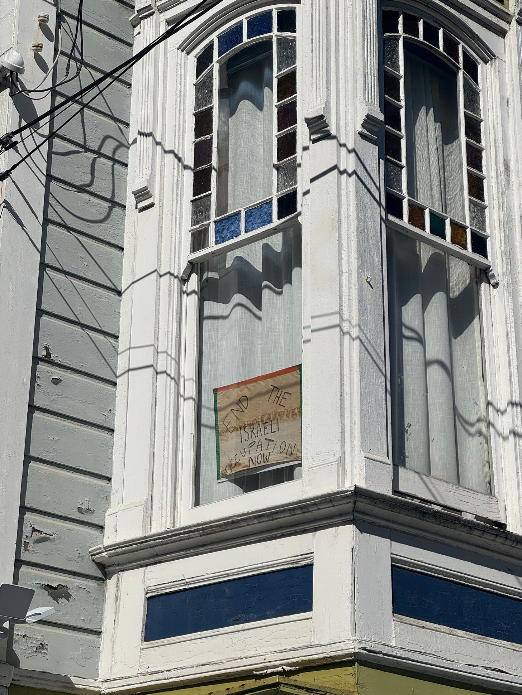
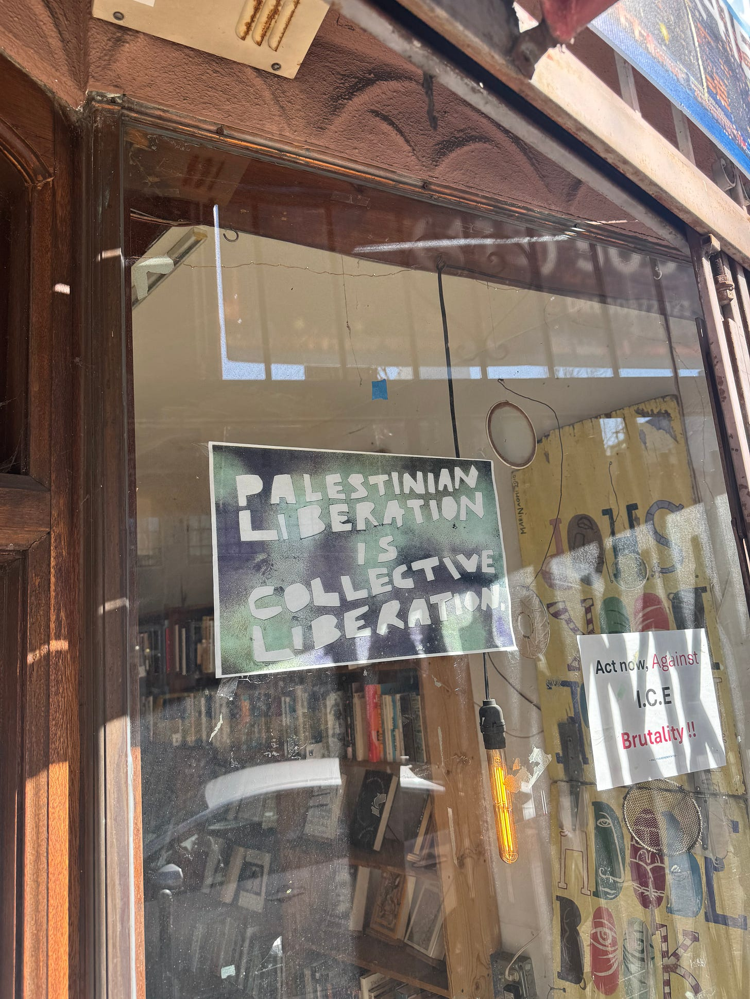
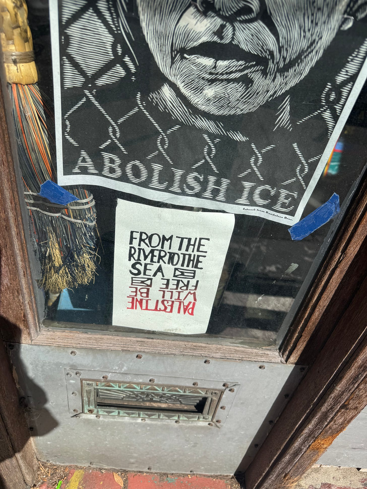
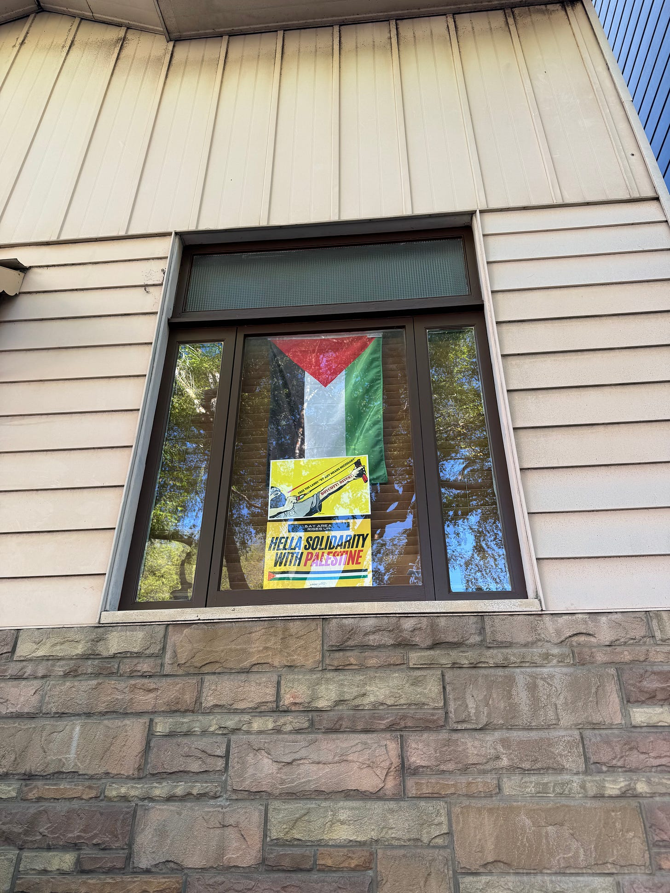
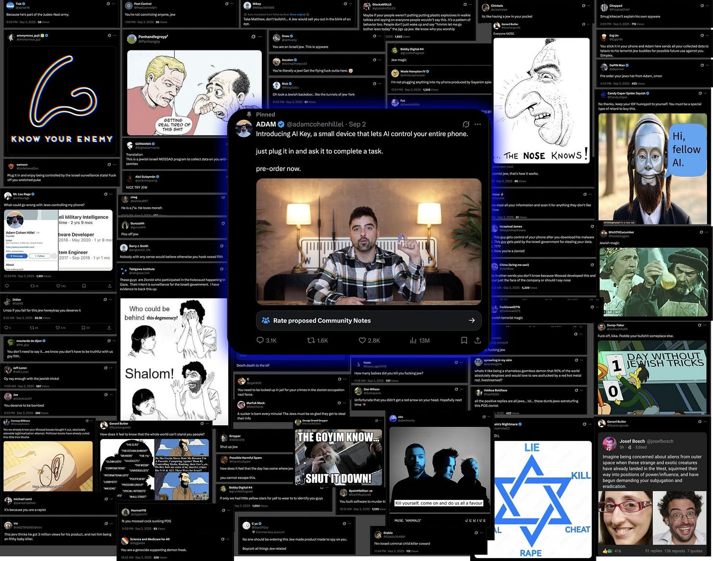

IsraValley
In the last couple of weeks, I returned to organizing events, mostly Shabbats, for Jews and friends in the Valley. I wanted to share a bit about the reasons behind it, and my vision for its potential.
Well - the first and most obvious reason - is that I love spending time with fellow Jews, who share the same traditions, the same connection to our beloved Israel, and who can understand me slightly better than others.
Secondly, after experiencing a massive antisemitic backlash against me last September for launching the AI Key, as well as observing the growing hatred appearing plainly on the streets around the world (in SF, Prague, London - everywhere I go - see pictures at the end). I felt the need to build a stronger community of people around me who truly understand this challenge.
Thirdly, I thought to myself - what would be the worst outcome for them, for their antisemitism against me? Well - if it made us stronger, more united, and more helpful to one another than ever before - that will do for now. Let them keep pushing, so that we can become an even shinier diamond. But we mustn’t let them stop us from creating value in this world.
Fourthly, I miss home. I miss Israel, my family, the people, the energy. Yet, I can’t go back right now. My purpose here has yet to be completed.
And lastly, maybe the most important of all: right now, San Francisco and the Bay Area is the most critical pressure point of one of the greatest revolutions of our lifetime, if not the greatest for generations to come. Greater than the Industrial Revolution, the printing press, the internet, mobile, everything. The founders and the leaders of the future are all passing through this little piece of land on the West Coast of the United States. Everything that is our species’ future is being developed here. From AI, robotics, space exploration, automation, new economics and governance structures, human augmentation and BCI, philosophy and the human condition, medicine, longevity, simulations, arts and culture, energy, biotechnology, to commerce.
We traditionally have contributed, and must continue to contribute, to every single one of those disciplines. We cannot be isolated in our little part of the world - we must exist, meet, and participate where the action is happening. Those great people who will shape humanity for decades to come must be familiar with us, we must contribute and work with them - and we must learn from the frontier so we can be the frontier. We cannot allow the hatred against us, and the push against our economy, to sabotage our participation in this great revolution. We must stand strong, create value, and collaborate with everything that is happening here.
IsraValley is my little attempt to build a beneficial and strong bridge between Silicon Valley and Israel. To allow a flow of Israeli entrepreneurs to come to the city and experience it to its fullest. To learn and bring it home. To come and build here as well, so we can have a great share of the future, and to befriend the leaders of these changing times. As well as to allow the founders and companies of the Valley to be accessible to the great talent of Israel, the amazing people, and to incentivize working relationships with our companies.
So on my 27th birthday, I write it here, to say it plainly - a great future awaits, and we will all build it together, layer by layer, in the Promised Land and in the Valley.
- Adam Cohen Hillel
IsraValley.com
The following pictures are only from 100 meter walk from my house to the nearest Cafe. These includes sentences like “by all means necessary”.




